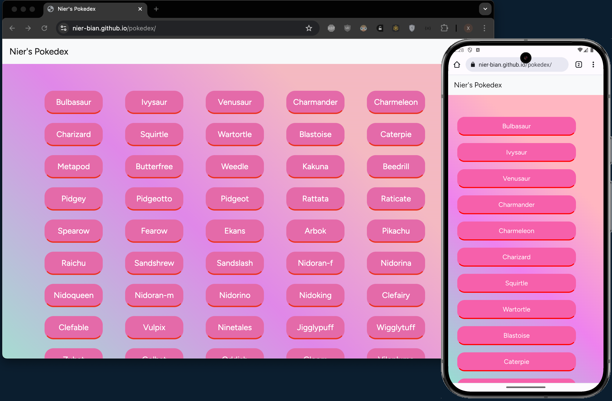
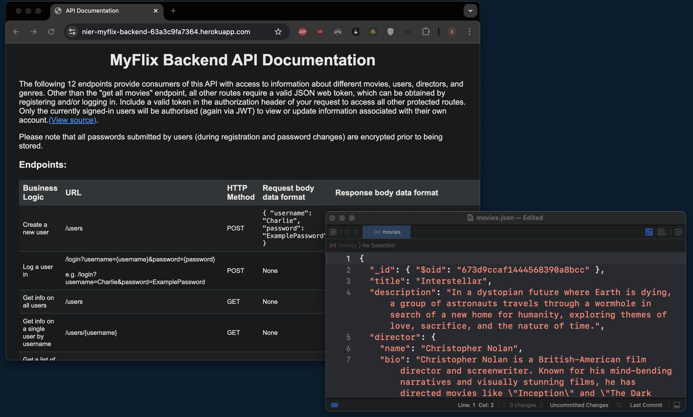
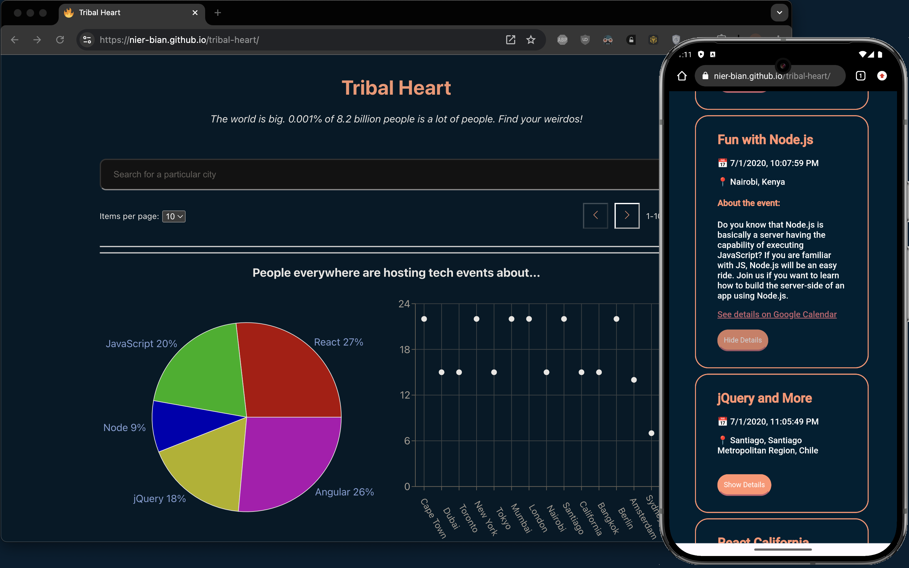
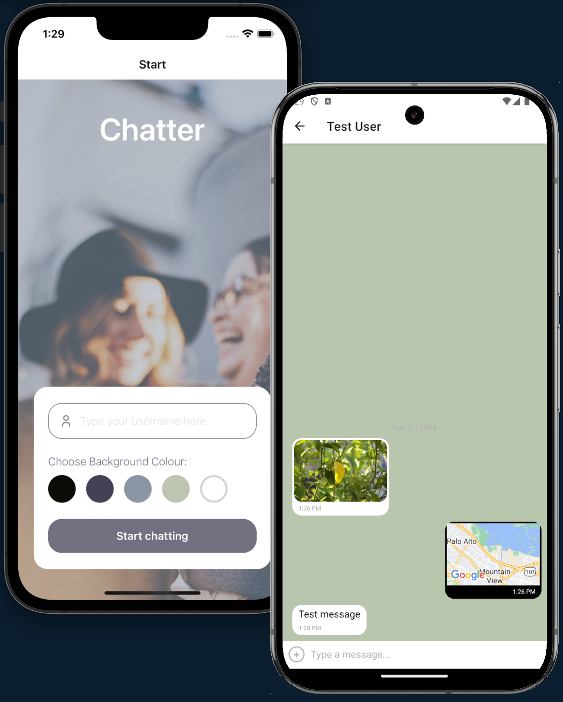

Work
Bootcamp staple: The Pokedex
This is a simple webapp written with vanilla JavaScript and Bootstrap. This project taught me web-dev 101: how to fetch data from some API, return a big JSON array of objects, then iterate over that data to display all the items (Pokemons in this instance) on the screen.
Links:Live // Code
MyFlix (Backend)
A movie database API built with Node.js, Express.js, and MongoDB to serve as the backend of a MERN-stack project. For this project I created my own authentication logic using JSON Web Tokens as well as basic username/password authentication. All passwords submitted by users (during registration and password changes) are encrypted prior to being stored. Personally, I especially loved learning about the mechanism of how JSON web-tokens work and the nitty-gritty of GDPR.
Links:Live // Code
MyFlix (React Frontend)

MyFlix is a movie finder web-app built with React and React Bootstrap to serve as the frontend of a MERN-stack project. Users can click into a movie card to view details, maintain a list of favourited movies, searching for movies by name, and view movies with the same genre in the database.
Links:Live // Code
Tribal Heart
Tribal Heart is serverless, Meet-Up-like PWA written with AWS Lambda, React, and Recharts on the frontend. For this project, I dug deep into understanding various OAuth2 workflows. I also had a chance to wrestle with React Testing library, write unit & integration tests with Jest, acceptance tests with Cucumber, and end-to-end tests with puppeteer. Personally, getting pagination to work was also a happy-dance moment.
Links:Live // Code
Chatter
Chatter is a real-time, cross-platform mobile app built with React Native, GiftedChat, Expo, and a Firebase backend. A major highlight of completing this project was making use of the onSnapshot() function from the firebase/firestore package to achieve real-time read/write queries to/from the message database (via WebSockets behind the scenes).
Code
Aaaand something for you, perhaps?
There’s a layer of the psyche that is very autobiographical, and another layer that is independent of events that occurred, and that was never itself altered by whatever happened to me. It witnesses and is aware of my personality, but does not have my personality. It is not gendered, and it does not have a nationality or a story or allegiance to pledge. That grounding layer is always in tact. As I get older, this is the part of me that I increasingly identify with, and not with the story of me that my monkey hardware smokes to keep itself going.
Drop me a note!